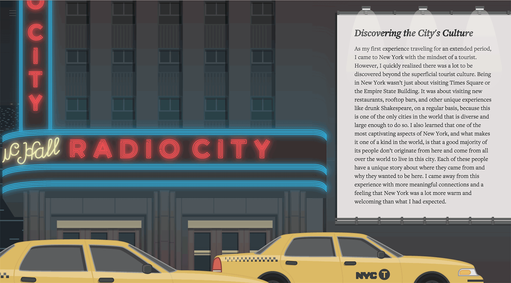

During the summer of 2014, I was lucky enough to land an internship in New York City. Since it was my very first time in the busy metropolis, and a completely new experience for me, I wanted to document my journey to share back with my with friends and family. As I started to ideate I thought to the standard Tumblr or Wordpress blog experience and realized that in all of the travel blogs my friends have made, I have never spent more than 5 minutes reading them. With that thought I set out to sum up my summer journey into a 5 minute experience.
In the end the site did far better than I was expecting. Instead of sharing my experience with just my friends and family, I was able to share it with the 10,000 visitors I had within the first month. The company I was interning at also gave me the opportunity to write an article about my process on “IDEO Labs”, their tech focused blog, that goes over the design and development that went into the project.
Credits:
Alison Rachuk — Editing
Back to Work